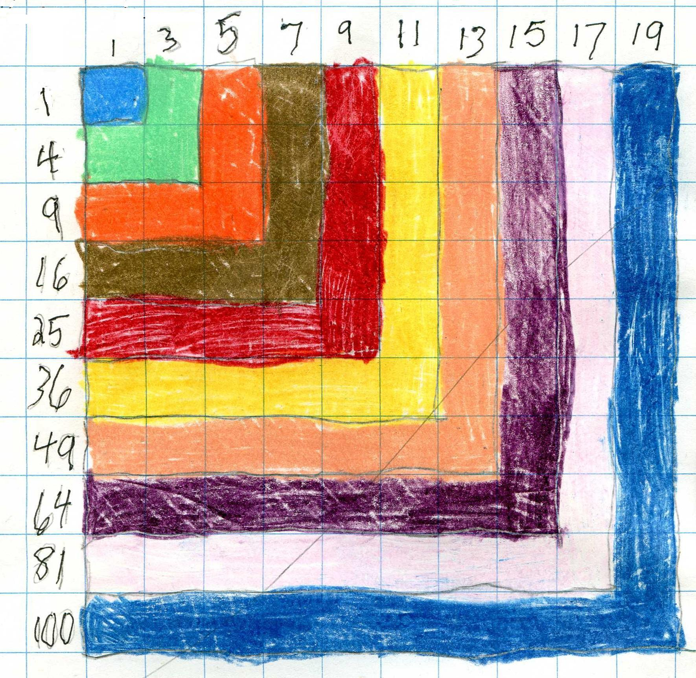

{kind=link}

Mom + 4 work with Don for 2 hours
[Where appropriate Don shows below what chapter in his worksheet book this topic was from; Mom had purchased Don's Worksheet book on CD from Rainbow Resource Center].
Don gave each of the children a problem to work on, then he talked to each to see what they were doing.
Esther (14 yo) worked on solving about 5 quadratic equations, from x2 - 5x + 6 = 0, figuring out the secrets of finding the solutions, to x2 - 6 1/2 x + 9 = 0. This last one gave her a hard time because she went for finding the two numbers that multiply to give 9 and got into decimals quickly. Don helped by suggesting finding two numbers that add to 6 1/2 first; then it only took a couple of guesses to get 2 and 4 1/2. Don then asked Esther to make up a quadratic equation for Don to solve and her first attempt didn't work- she didn't have the two answers. Don suggested she pick the answers, then make the equation and that worked for her. Esther also solved one quadratic equations by getting x=5 - 6/x, then iterating the right side. See chapter 8 in Don's worksheet book for more information and see Maura's work on Don's website.
Esther also worked on the Peg game. She should go to chapter 6 in Don's Worksheet book to see where this goes.
Fine job Esther!
Hannah (12 yo) made
a pattern with the square numbers, like that below. She originally mixed up a
square number and the square root of a number, but we easily fixed that. The
picture below is like the one Hannah made, but Don didn't get to scan her
picture and had to use one that Tara, his granddaughter made.
The square numbers are on the left and the odd numbers, the differences between the square numbers, 4-1 = 3, 9-4=5, etc. are on top. Hannah saw the pattern that the differences go up 2 each time.

Hannah also graphed the equation x2 = y and obtained a symmetrical curve called a parabola. She had to multiply negatives, which she knew.
The picture below show the cards used in The Magic Card Game. Don showed everyone this game and Hannah made a set to take home.
As the leader, you say "Pick a whole number from 1 to 31 and don't tell me what it is. I will tell you your number. Is your number on card A? Is your number on card B? " and so on through card E. If the person says their number is on cards A, B and D, for example, you add the numbers in the upper left hand corner of those cards A, B and D, or 1 + 2 + 8 = 11 which is the person's number! Now try this on your friends, parents and teachers!
Everyone tried to guess each other's number and did very well.
Fine job Hannah!
For those who want to see why this works, see Sheri's webpage.
Estelle also worked on the Tower Puzzle (see chapter 6).
The last thing she did was get a start on the infinite series (from chapter 1), going about this far:
Fine job, Estelle!
Don started John (7 yo) graphing x + y = 7 because he was 7 years old. Don asked John if he could give him 2 numbers that add to 7. He came up with 1 and 6. Don wrote the pair in the table at the right, showed John how to plot a point at (1,6) on the graph paper with a mark x. The 1 is the x-number, so you go 1 to the right, and 6 is the y-number, so you go up 6 Don asked John to find more pairs of numbers that add to 7, which he did, then plotted those on the graph. John eventually followed the "yellow brick road" to get negatives (8+-1 is like 8 and a takeaway 1 = 7), and Don put a mark at (4 1/2, 2 1/2). They talked about Don giving John 4 cookies but less than 5, and that could be 4 1/2 on the x-axis. Then how far John needed to go up to the mark x, and he figured 2 1/2. He added 4 1/2 + 2 1/2 to get 7.
John did a fine job with the graph! (See chapter 6.)
John found the wooden pieces of Don's 3-D Multiplication Table on the floor. (Also on the floor were pieces from the Pattern Blocks set, and a scale with 10 gram weights to put on either side of it). Don, on the floor, got John to put the flat pieces in order. Originally sawed from a flat 10x10x1 piece of wood from the Dienes Blocks set, each piece was marked as shown in the picture. They put this on the table to show everyone. Everyone looked for patterns in the steps. They saw the 2x-table going up to the right and left, then the 3-times table. Don asked Hannah about the numbers going up the middle..they were 1, 4, 9, 16 which were the square numbers. And that got Hannah working on square numbers above!

John also worked on the 15 puzzle- a 3 row x 3 column magic square, made out of wooden pieces to move, each with one of the numbers numbers 1-9 on it. The object is to get each of the 3 rows, and each of the 3 columns and the 2 main diagonals to add up to 15.
Fine job, John!
Mom watched and listened, and Don did get her to solve a quadratic equation. Don didn't find a mistake she made and it caused Don to be confused. Fortunately Mom left her paper and he found the error that he missed while she was here. He sent his correction by email with an attached file. She did the iteration correctly.
Fine job, Mom! It was Don's mistake for not catching the error.
Don had a wonderful 2+ hours with wonderful students!
Don received this email from Mom, 2 days later:
Dear Mr. Cohen,
We enjoyed it as well! We will come again, we had a great time, we decided to just go home instead of going to Springfield, which we'll have to do next time. We'll be checking your
website and get back with you when we need to set something up (instant
messenger) or come down again.
Thanks,
Sharon